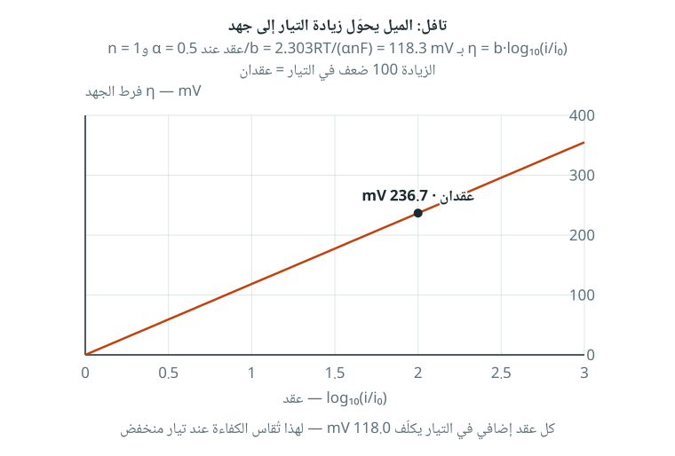

معادلة تافل
Tafel equation
معادلة تافل تربط فرط الجهد η في قطب كهربائي بلوغاريتم كثافة التيار: η = a + b·log(i)، حيث b ميل تافل. وتصف المنطقة التي تسيطر فيها الحركية الكهروكيميائية لا الانتقال الكتلي. ميل تافل النموذجي 60–120 mV لكل عقد (decade) في تفاعلات إنتاج الهيدروجين.
عندما يبتعد جهد القطب عن جهده المتوازن يبدأ تيار كهروكيميائي. وعند فرط جهد صغير تكون العلاقة خطية تقريباً، وعند فرط جهد أكبر تصبح لوغاريتمية: كل زيادة ثابتة في فرط الجهد تضاعف التيار عشر مرات. وهذا هو سلوك تافل. ويُستخرج الميل من رسم η مقابل log(i)، وهو مقياس لسرعة التفاعل: الميل الأصغر يعني تفاعلاً أسرع عند فرط جهد معيّن. مثال: قطب بميل تافل 120 mV/decade وفرط جهد 240 mV يعمل عند كثافة تيار أعلى بـ10⁴ مرة من نقطة المرجع.
كيف تعمل الظاهرة؟
في التفاعل الكهروكيميائي تنتقل الإلكترونات بين القطب والجزيئات، ويحتاج هذا الانتقال تجاوز حاجز طاقة. وفرط الجهد يخفض هذا الحاجز، فكل زيادة في فرط الجهد تزيد نسبة الجزيئات القادرة على العبور. وبما أن النسبة تزيد أسّياً مع الطاقة، والطاقة تتناسب خطياً مع فرط الجهد، يكون التيار أسّياً في فرط الجهد، أي أن فرط الجهد لوغاريتمي في التيار. وهذا هو أصل معادلة تافل، وهي حالة خاصة من معادلة بتلر-فولمر عند فرط جهد كبير.
العلاقة بالأرقام
η = b·log₁₀(i/i₀)، حيث i₀ كثافة تيار التبادل. وb = 2.303RT/(αnF). مثال: عند 25 °C وα = 0.5 وn = 1: b = 59.2/0.5 = 118.4 mV/decade. ولو كان i₀ = 1.0×10⁻⁶ A/cm² وأردنا i = 1.0×10⁻² A/cm² لكان η = 118.4×log₁₀(10⁴) = 118.4×4 = 474 mV. وهذا فرط جهد كبير يوضح لماذا تحتاج خلايا التحليل الكهربائي جهداً أعلى من النظري.
مفاهيم متقاربة
يُفرَّق بين معادلة تافل ومعادلة بتلر-فولمر: الثانية عامة والأولى تقريب عند فرط جهد كبير. ويُفرَّق بين ميل تافل ومعامل الانتقال: الأول mV/decade والثاني بلا وحدة. ويُفرَّق بين فرط الجهد وفرق الجهد: الأول انحراف عن التوازن والثاني فرق مطلق بين قطبين. وأخيراً يُفرَّد بين منطقة تافل ومنطقة الانتقال الكتلي، حيث تنحني العلاقة عند الأخيرة وتفشل معادلة تافل.
حدود التطبيق
معادلة تافل لا تصف فرط الجهد الصغير حيث تسيطر معادلة بتلر-فولمر. ولا تصف التيارات العالية حيث يسيطر الانتقال الكتلي وتظهر كثافة تيار حدّية. ولا تصف الأنظمة ذات المقاومة الأومية الكبيرة بلا تصحيح هبوط الجهد. ولا تصف التفاعلات التي تتغير فيها آلية التفاعل مع فرط الجهد، فتظهر مناطق بميول مختلفة. وأخيراً لا تصف التسمّم السطحي أو التغطية بالممتصات التي تخفض i₀.

| الكمية | القيمة | المصدر |
|---|---|---|
| ميل تافل النموذجي | 60–120 mV/decade | [1] |
| 2.303RT/F عند 25 °C | 59.2 mV | [1] |
| زيادة التيار عند 240 mV | 100 — | [1] |
المصادر
- 1 CODATA Value: Boltzmann constant — NIST — CODATA 2022 recommended values (2024). physics.nist.gov/cgi-bin/cuu/Value?k · اطُّلع عليه 2026-11-22
- 2 CODATA Value: Avogadro constant — NIST — CODATA 2022 recommended values (2024). physics.nist.gov/cgi-bin/cuu/Value?na · اطُّلع عليه 2026-11-22
استشهد بهذا المصطلح
الصيغتان مبنيتان من بيانات الصفحة نفسها: العنوان والتاريخ ورابط النسخة المنشورة.
معادلة تافل — Tafel equation. (2026). ديوان المعرفة — انفراد. https://infiradev.com/diwan/terms/term-tafel-equation.html
@misc{term-tafel-equation2026,
title = {معادلة تافل},
titleaddon = {Tafel equation},
howpublished = {{ديوان المعرفة — انفراد} — مرجع علمي عربي},
year = {2026},
url = {https://infiradev.com/diwan/terms/term-tafel-equation.html},
urldate = {2026-11-22},
note = {مراجعة علمية: تحرير انفراد الآلي — نُشر بأمر عبدالله الهويدي}
}
راجعه: تحرير انفراد الآلي — نُشر بأمر عبدالله الهويدي · 2026-11-22 · آخر تحديث 2026-11-22